Status effects
Buffs, debuffs, needs, injuries and diseases of the characters. The name and the description are the game texts.
In-run effects (26)
Stun
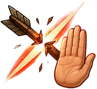
Interruption
Shield
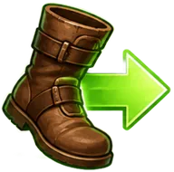
Haste
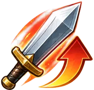
Damage boost
Acid exposure
Light bleeding
Light bleeding: lasts 60 sec. Deals 4 damage every 10 sec. Repeated light bleeding escalates it to heavy bleeding.
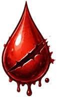
Heavy Bleeding
Heavy bleeding: lasts 360 sec. Deals 6 damage every 8 sec. Repeated heavy bleeding escalates it to critical bleeding.
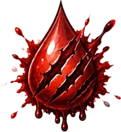
Critical Bleeding
Critical bleeding: does not end on its own. Deals 10 damage every 6 sec. Requires bandaging.
Light Burning
Light burning: lasts 6 sec. Deals 6 damage every second. Repeated light burning escalates it to heavy burning.
Heavy Burning
Heavy burning: lasts 8 sec. Deals 10 damage every second. Repeated heavy burning escalates it to critical burning.
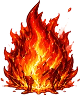
Critical Burning
Critical burning: lasts 10 sec. Deals 15 damage every second.
Light Frost
Light frost: lasts 7 sec. Movement and running speed are reduced by 30%, melee attack speed by 25%. Jumping and dodging are unavailable.
Heavy Frost
Heavy frost: lasts 12 sec. Movement and running speed are reduced by 50%, melee attack speed by 40%. Jumping and dodging are unavailable.
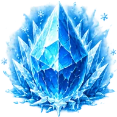
Deep Frost
Deep frost: lasts 18 sec. Movement and running speed are reduced by 70%, melee attack speed by 60%. Jumping and dodging are unavailable.
Light Poisoning
Light poisoning: lasts 180 sec. Deals 3 damage every 15 sec. Repeated light poisoning escalates it to heavy poisoning.
Heavy Poisoning
Heavy poisoning: lasts 600 sec. Deals 5 damage every 12 sec. Repeated heavy poisoning escalates it to severe poisoning.
Severe Poisoning
Severe poisoning: does not end on its own. Deals 7 damage every 10 sec. Requires special treatment.
Shock
Shock: lasts 1 sec. Blocks actions, movement, jumping, and dodging, and immediately deals 5% of source damage. Repeated shock escalates it to heavy shock.
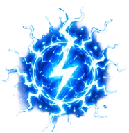
Heavy Shock
Heavy shock: lasts 1.5 sec. Blocks actions, movement, jumping, and dodging, and immediately deals 6% of source damage. Repeated heavy shock escalates it to critical shock.
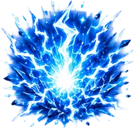
Critical Shock
Critical shock: lasts 2 sec. Blocks actions, movement, jumping, and dodging, and immediately deals 7% of source damage.
Slowed
Light Stun
Light stun: lasts 2 sec. Blocks actions, movement, jumping, and dodging. Repeated light stun escalates it to heavy stun.
Heavy Stun
Heavy stun: lasts 3 sec. Blocks actions, movement, jumping, and dodging. Repeated heavy stun escalates it to knockout.
Knockout
Knockout: lasts 5 sec. Blocks actions, movement, jumping, and dodging.
Needs and condition (24)
Overload I
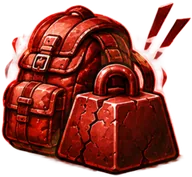
Overload II
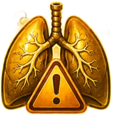
Out of breath
Psi exhaustion
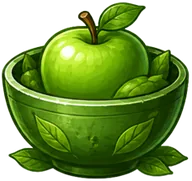
Well fed
Hungry
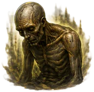
Starving
Hydrated
Dehydration
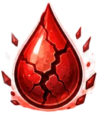
Critical dehydration
Rested
Tired
Exhausted
Prepared
Fatigued at start
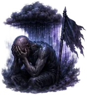
Suppressed at Start
A start-of-run debuff when beginning an expedition with morale in the 0..40 range.
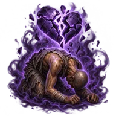
Broken
The lowest morale state. The character is psychologically broken.
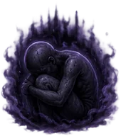
Depression
Severe morale collapse. The character performs noticeably worse than usual.
Suppressed
A strong morale decline. Applies a moderate penalty and signals a problem.
Inspired
A positive morale upswing. Grants a pleasant but non-essential bonus.
Happy
The top morale range. A reward for a consistently healthy life loop.
Burdened
Carried weight has reached 75% of carrying capacity. Movement speed decreases as the load increases.
Irritated
Mild irritation. Slightly lowers psi energy capacity and regeneration.
Gloomy
A gloomy mood. Slightly lowers psi energy capacity and regeneration; fatigue builds up a little faster.
Injuries (12)
Leg sprain
Movement speed is reduced by 15%, sprint speed by 25%. Jump force is reduced by 50% until the sprain is treated.
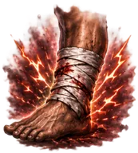
Leg fracture
Movement speed is reduced by 30%. Sprinting is unavailable. Jump force is reduced by 80% until the fracture is treated.
Shattered leg bone
Movement speed is reduced by 50%. Sprinting, jumping, and rolling are unavailable until the injury is stabilized.
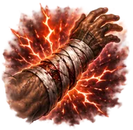
Arm contusion
Arm fracture
Crushed arm
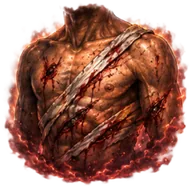
Deep wound
Ragged wound
Penetrating trauma
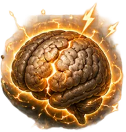
Concussion
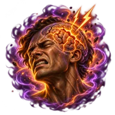
Severe concussion
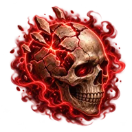
Cranial trauma
Sortie conditions (21)
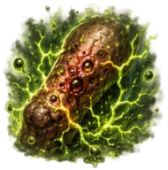
Class I zombie-virus infection
Class II zombie-virus infection
Class III zombie-virus infection
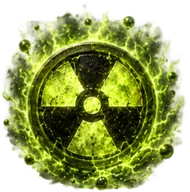
Radiation exposure I
Radiation exposure II
Radiation exposure III
Light body burns
A consequence of burning. Reduces health, regeneration, and increases running cost.
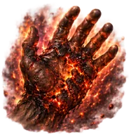
Severe body burns
Severe body burns. The character recovers worse and tires faster while running.
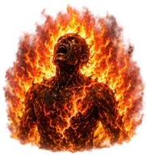
Critical body burns
Critical body burns. Requires aid station care and heavily reduces health recovery.
Mental noise
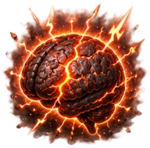
Neural burn
Psi fracture
Light blood loss
Accumulated blood loss after sorties. Reduces max health, stamina, and work speed. Treated in the aid station.
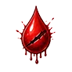
Severe blood loss
Severe blood loss after frequent or heavy bleeding. Significantly reduces health, stamina, and work output.
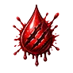
Critical blood loss
Critical blood loss. The character is badly weakened and needs aid station treatment before the next sortie.
Light intoxication
Accumulated intoxication after poison exposure. Reduces stamina, stamina recovery, and healing efficiency.
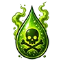
Severe intoxication
Severe intoxication. The character tires faster and responds worse to treatment.
Critical intoxication
Critical intoxication. Requires aid station care and heavily reduces stamina and healing.
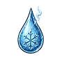
Light frostbite
A consequence of frost exposure. Slightly reduces movement, running, and jump force.
Severe frostbite
Severe frostbite. Noticeably hinders movement and jumping.
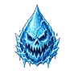
Critical frostbite
Critical frostbite. Movement is difficult; aid station treatment is strongly recommended.
Bunker diseases (9)
Common cold
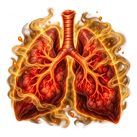
Bronchitis
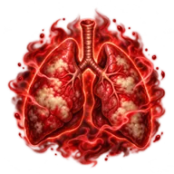
Pneumonia
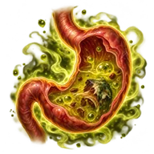
Food poisoning
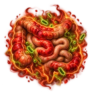
Intestinal infection
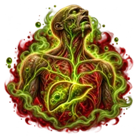
Severe toxicosis
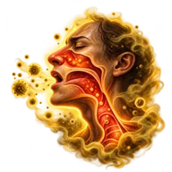
Spore irritation
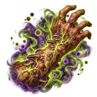
Fungal infection
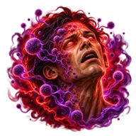